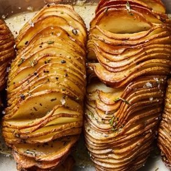

← All recipes
Hasselback Potatoes

Servings: 4 servings · Prep: 5 min · Cook: 1 hr 25 min
Ingredients
- 4 medium russet potatoes (about 10 ounces each), washed and dried
- 4 tablespoons unsalted butter
- 4 tablespoons olive oil
- 1 teaspoon kosher salt (such as Diamond Crystal), plus more for serving
- 1/2 teaspoon black pepper, plus more serving
- 1 teaspoon chopped fresh rosemary or thyme, or 1/2 teaspoon dried (optional)
Directions
- Heat the oven to 425 degrees and line a sheet pan with parchment paper.
- Place one potato on a cutting board with the long side facing you. Arrange two chopsticks, skewers or wooden spoon handles along the long sides of the potato, sliding them slightly underneath. Cut the potato crosswise into 1/8-inch-thick slices. (The chopsticks will prevent the blade from cutting all the way through and will keep the potato intact.) Repeat with the remaining potatoes and place them on the sheet pan.
- In a small, microwave-safe bowl, melt the butter in the microwave in 10-second intervals. Add the olive oil, salt, pepper and rosemary and mix with a fork. Brush the butter mixture over the potatoes, taking your time to pull the slices apart and brush in between them.
- Roast the potatoes, basting between the slices (they’ll open as they cook) with butter from the pan every 20 minutes, until they’re fork-tender in the center but crisp on the edges, 60 to 70 minutes. Season the potatoes with more salt and pepper and serve hot.
Original source: cooking.nytimes.com